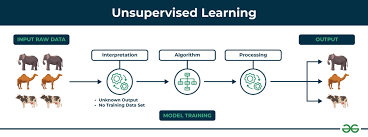
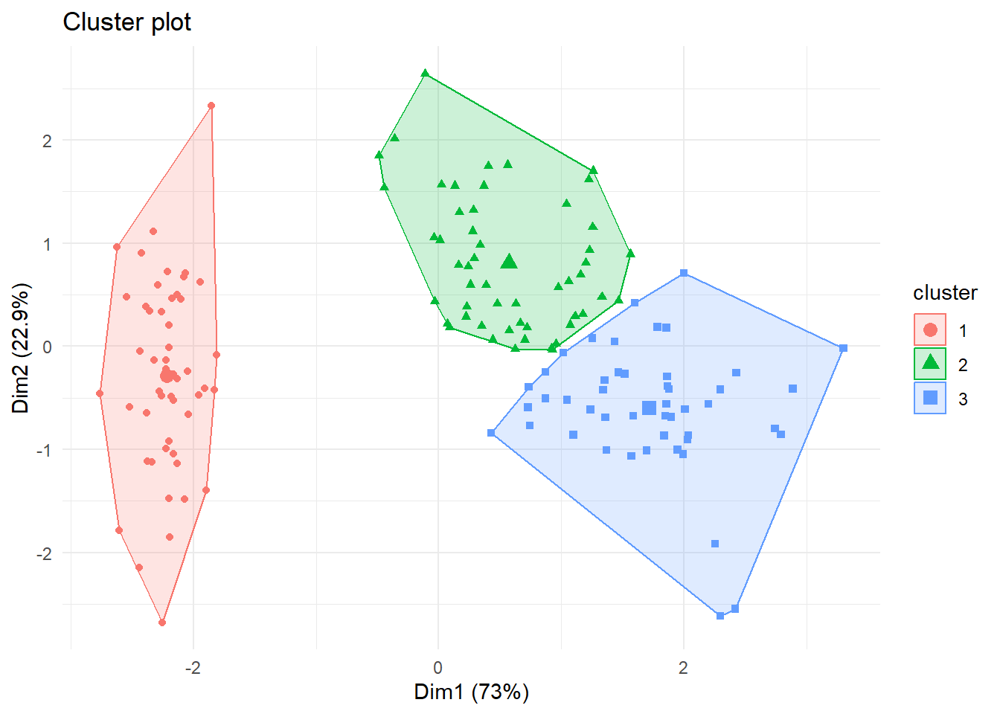
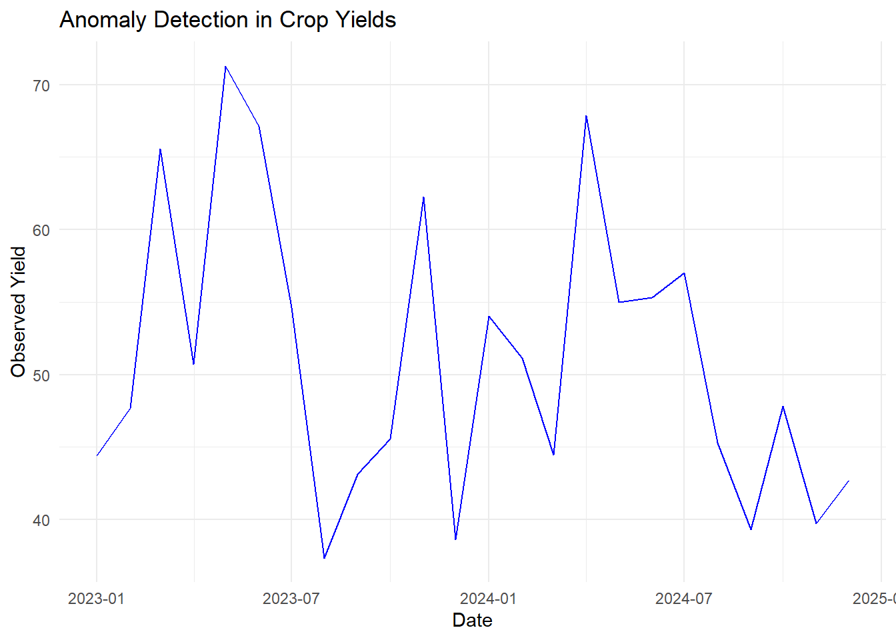

International Institute of Tropical Agriculture (IITA)
Unsupervised Learning
In unsupervised learning, the algorithm is trained using a dataset without labeled outputs, meaning the input data does not come with predefined answers. The model learns to identify patterns and relationships within the data. This approach is commonly used for tasks like clustering, dimensionality reduction, and anomaly detection. As the name implies, unsupervised learning employs self-learning algorithms that operate without labels or prior training. Instead, the model is provided with raw, unlabeled data and must derive its own rules and structure by identifying similarities, differences, and patterns, without receiving explicit instructions on how to handle each data point. Unsupervised learning algorithms are particularly effective for handling complex processing tasks, such as grouping large datasets into clusters. They excel at uncovering previously hidden patterns within the data and can reveal features that are valuable for categorizing information.

Source:geeks for geeks
Examples
Here are some examples of unsupervised learning:
Clustering, e.g. K-means clustering
Association, e.g. Apriori algorithm
Dimensionality reduction, e.g. Principal Component Analysis (PCA)
Anomaly detection, e.g. Isolation forest
Clustering Use Case
The agridat package in R contains a wealth of agricultural datasets that can be used for various statistical analyses, including clustering. Clustering is a technique that can group similar data points based on their attributes. We can use the datasets in agridat to demonstrate clustering techniques. Let’s say we want to cluster different varieties of corn based on several agronomic traits (like yield, height, and so on) to understand which varieties are similar to each other.
Step 1 - Install and Load Necessary Packages
Make sure you have the agricolae package installed along with factoextra package for visualization.
#|eval=TRUE#|results='hide'#|echo = FALSEsuppressPackageStartupMessages({install.packages("agricolae") # agricolae for agricultural methods install.packages("factoextra")}) # for visualizing clustering
package 'agricolae' successfully unpacked and MD5 sums checked
The downloaded binary packages are in
C:\Users\DOjekere\AppData\Local\Temp\RtmpC0D2Fo\downloaded_packages
package 'factoextra' successfully unpacked and MD5 sums checked
The downloaded binary packages are in
C:\Users\DOjekere\AppData\Local\Temp\RtmpC0D2Fo\downloaded_packages
For this example, we will use the corn.yield dataset from agridat. This dataset includes information on different corn varieties and their yields.
#|eval=TRUE#|tidy=FALSE#|size='tiny'# Example data - replace with your own dataset data(iris) df <- iris[, -5] # Exclude Species for clustering
Step 3 - Data Preprocessing
It’s essential to preprocess the data, such as scaling or normalizing if the features have different scales.
df_scaled <-scale(df) #scale the dataset
Step 4 - K-means Clustering
We can use the k-means clustering method and the elbow method to find the optimal number of clusters.
# Trying different values of k set.seed(123) # For reproducibility kmeans_result <-kmeans(df_scaled, centers =3, nstart =25)
Use packages like factoextra to visualize the clustering results.
Step 5 - Visualizing Clusters
We can visualize the clustering results.
# Visualizing the clustering fviz_cluster(kmeans_result, data = df_scaled, geom ="point", ellipse.type ="convex") +theme_minimal()

You can analyze the composition of the clusters and draw conclusions based on your research questions.
Using agricolae for further analysis:
If you want to perform multiple comparisons or ANOVA after clustering, you can integrate agricolae methods.
For example, after clustering, if you want to compare the means of different clusters, you could use:
# Add cluster memberships to the original dataset df$Cluster <-factor(kmeans_result$cluster) # Perform ANOVA anova_result <-aov(Sepal.Length ~ Cluster, data = df) summary(anova_result)
Df Sum Sq Mean Sq F value Pr(>F)
Cluster 2 76.46 38.23 218.6 <2e-16 ***
Residuals 147 25.71 0.17
---
Signif. codes: 0 '***' 0.001 '**' 0.01 '*' 0.05 '.' 0.1 ' ' 1
# Using Tukey's HSD test to compare means HSD.test(anova_result, "Cluster", group =TRUE)
Since the p-value is extremely low, we conclude that there are significant differences between the clusters being analyzed. This typically implies that at least one of the cluster means differs from the others, warranting further investigation into the specific group differences (for example, using post-hoc tests). In summary, the ANOVA results indicate strong evidence that the clusters being compared have different means, and the differences are highly statistically significant.
Anomaly Detection Use Case
Anomaly detection in agriculture is crucial for identifying irregularities in data, such as unusual crop yields, abnormal soil conditions, or deviations in environmental variables. Here, I’ll walk you through an example of anomaly detection using a synthetic dataset related to crop yields. We’ll use R and the anomalize package, which is suitable for time series anomaly detection.
Objective: Detect anomalies in crop yield data over time.
Step 1 - Install and Load Required Packages
If you haven’t installed the required packages, you can do so using the following commands:
package 'anomalize' successfully unpacked and MD5 sums checked
The downloaded binary packages are in
C:\Users\DOjekere\AppData\Local\Temp\RtmpC0D2Fo\downloaded_packages
Step 2 - Create a Sample Dataset
Let’s create a synthetic dataset that simulates monthly crop yields with some anomalies:
We’ll use the anomalize package to detect anomalies in the crop yield data. The package provides a straightforward way to apply anomaly detection to time series data.
#|message=FALSE# Convert to time series object crop_data_ts <- crop_data %>%arrange(date) %>%as_tibble() %>%time_decompose(yield, method ="stl") %>%anomalize(remainder, method ="iqr") %>%time_recompose()
Converting from tbl_df to tbl_time.
Auto-index message: index = date
frequency = 3 months
trend = 12 months
Registered S3 method overwritten by 'quantmod':
method from
as.zoo.data.frame zoo
# Print the anomaly results print(crop_data_ts)
# A time tibble: 24 × 10
# Index: date
date observed season trend remainder remainder_l1 remainder_l2 anomaly
<date> <dbl> <dbl> <dbl> <dbl> <dbl> <dbl> <chr>
1 2023-01-01 44.4 4.91 44.1 -4.65 -29.9 33.2 No
2 2023-02-01 47.7 -0.759 44.4 4.10 -29.9 33.2 No
3 2023-03-01 65.6 -4.15 44.6 25.2 -29.9 33.2 No
4 2023-04-01 50.7 4.91 44.8 0.983 -29.9 33.2 No
5 2023-05-01 71.3 -0.759 45.0 27.0 -29.9 33.2 No
6 2023-06-01 67.2 -4.15 45.2 26.1 -29.9 33.2 No
7 2023-07-01 54.6 4.91 45.4 4.32 -29.9 33.2 No
8 2023-08-01 37.3 -0.759 45.4 -7.25 -29.9 33.2 No
9 2023-09-01 43.1 -4.15 45.3 1.94 -29.9 33.2 No
10 2023-10-01 45.5 4.91 46.0 -5.35 -29.9 33.2 No
# ℹ 14 more rows
# ℹ 2 more variables: recomposed_l1 <dbl>, recomposed_l2 <dbl>
Step 4 - Visualize the Results
We can visualize the detected anomalies to better understand where they occur:
# Plot the results ggplot(crop_data_ts, aes(x = date, y = observed)) +geom_line(color ="blue") +geom_point(data =subset(crop_data_ts, anomaly =="Yes"), aes(color = anomaly), size =3) +labs(title ="Anomaly Detection in Crop Yields", x ="Date", y ="Observed Yield") +theme_minimal()

Summary
Create a Dataset: We generated a synthetic dataset with normal crop yields and added some anomalies.
Apply Anomaly Detection: We used the anomalize package to detect anomalies in the time series data.
Visualize Results: We plotted the results to highlight the detected anomalies.
This example demonstrates a basic approach to anomaly detection in agricultural data. For real-world applications, you might have more complex datasets and might need to explore additional preprocessing steps or more sophisticated anomaly detection methods based on the nature of your data.